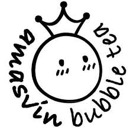

2. BUBBLE TEA
버블티란?
버블티는 대만에서 개발된 차 음료이다. 홍차나 우롱차, 녹차 등의 차 종류와 우유, 그리고 설탕 등 감미료를 섞어 만든 밀크티에 펄을 넣어 먹는다.
펄 외에 다른 젤리류가 들어가기도 한다. 우리나라 버블티 시장에선 공차와 아마스빈이 유명한 편이다.
인하대 주변 버블티 가게
 |
 |  |
|---|---|---|
| 공차 | 아마스빈 | 팔공티 |
공차
다른 버블티 브랜드에 비해 가격대가 높긴 하지만 제일 좋아하는 버블티 브랜드이다.
공차는 총 40개가 넘는 메뉴가 있기 때문에 각자의 취향대로 음료를 골라 먹으면 된다.
블랙밀크티, 타로밀크티, 초코렛 밀크티 등 밀크티 종류가 대표적인 메뉴이며 스무디나 주스도 많은 종류가 있다.
또한 공차는 타피오카, 알로에, 코코넛, 화이트 이렇게 총 4가지의 펄이 있는데 여기서 타피오카 펄을 가장 좋아한다.
개인적으로 타피오카 펄을 좋아하는 편인데 다른 브랜드에 비해 공차의 펄이 더 쫀득하고 고소해서 공차를 제일 좋아한다.
내가 정하는 공차 메뉴 BEST 3

1. 커피밀크티크러쉬
가격 : 4800원
이 음료는 타피오카 펄과 밀크폼 둘 중 하나가 기본 옵션이다. 그래서 본인의 취향껏 토핑을 골라 먹으면 된다.
개인적으로는 밀크폼 기본 옵션에 펄을 추가해서 먹는 것이 제일 맛있는 것 같다. 맛은 퀄리티 좋은 더위사냥 맛이다.

2. 망고요구르트
가격 : 5000원
망고 퓨레와 요구르트 시럽을 넣어 만든 음료로 너무 진하지 않은, 가볍게 먹을 수 있는 망고 주스이다.
이 음료에는 화이트펄이 가장 잘 어울리는 것 같다. 공차 베스트 콤비네이션 가격으로 먹으면 더 싸게 먹을 수 있다.

3. 초코 쿠앤크 스무디
가격 : 4500원
그냥 기본적으로 먹는 초코 음료로 가장 대중적인 초코음료인 것 같다.
이 음료는 펄을 따로 추가해야 한다. 이 음료에 어울리는 펄은 타피오카 펄인 것 같다.